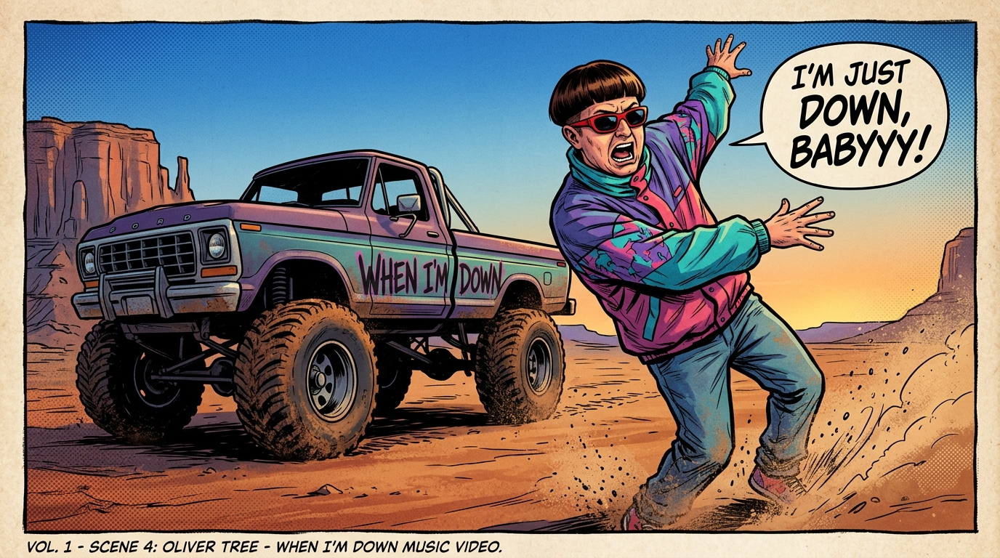
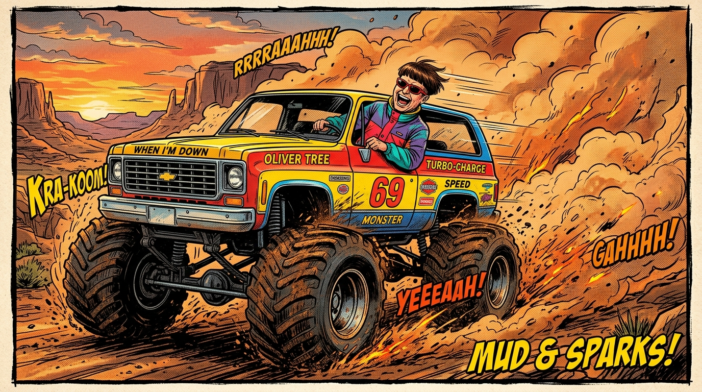
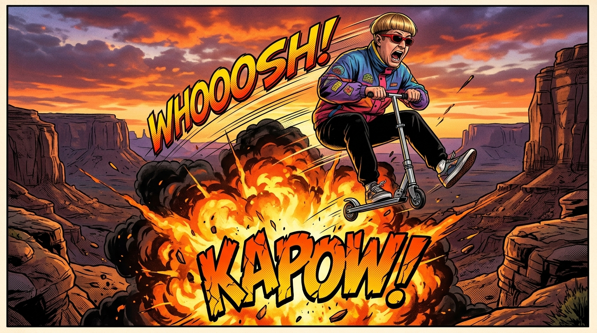
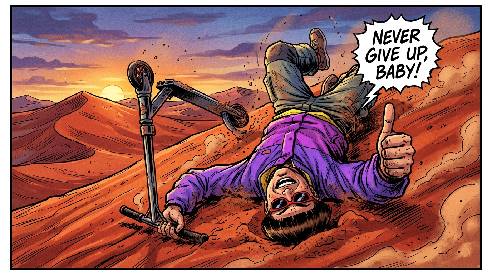

Tác phẩm chuyển thể từ siêu hit khai sinh hình tượng Oliver Tree. Khám phá phong cách ngông cuồng, quả đầu bát úp và những pha mạo hiểm đi vào lòng đất!

Giữa thung lũng sa mạc hoang vu, chàng ca sĩ tóc bát úp với chiếc áo khoác gió retro 90s rộng thùng thình bung xõa những bước nhảy kỳ quặc bên chiếc Monster Truck tím hồng, khuấy động không khí bằng năng lượng không thể dập tắt.

Oliver nhảy tót lên chiếc Monster Truck số hiệu 69, đạp lút chân ga thực hiện pha drift bẻ lái 180 độ tóe lửa, cuốn phăng bụi cát mịt mù như một cơn bão cuộn trào trên nền nhạc sôi động.

Đỉnh cao của sự mạo hiểm: Chiếc xe trượt scooter mini lao vút lên không trung xé rách biển lửa bốc cháy ngùn ngụt. Khuôn mặt Oliver há hốc nghẹt thở nhưng vẫn quyết không buông tay lái!

Chiếc xe scooter cắm ngược xuống đồi cát. Oliver nằm lọt thỏm trong cát nóng, kính râm xộc xệch nhưng ngón tay cái vẫn giơ cao kiêu hãnh khẳng định tinh thần lạc quan không bao giờ bị đánh bại.